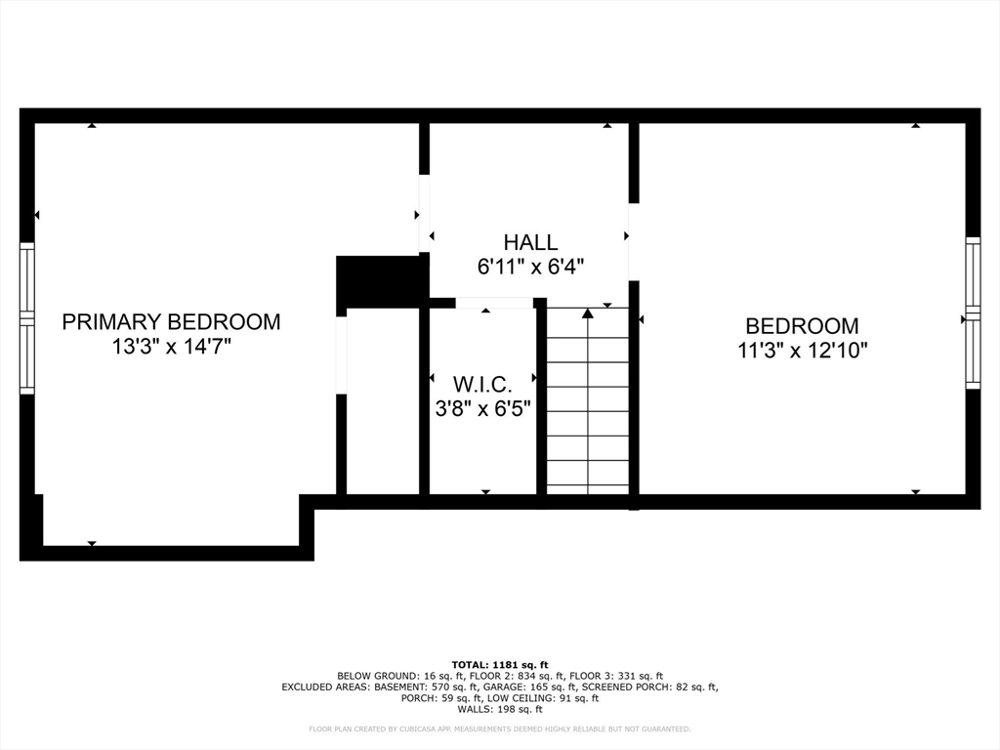
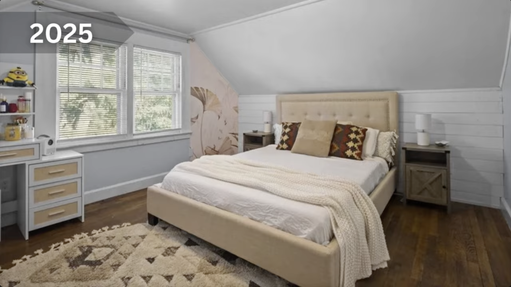
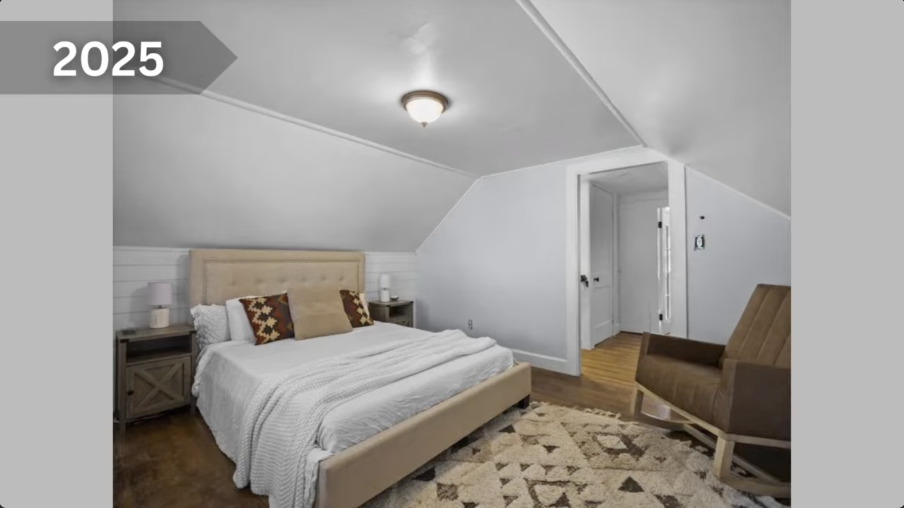
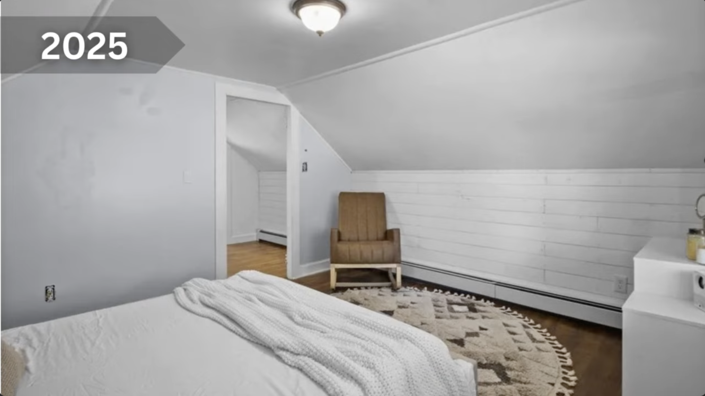
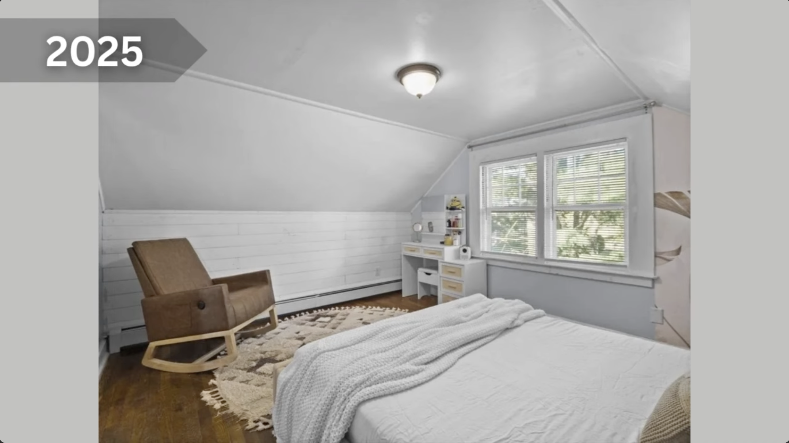
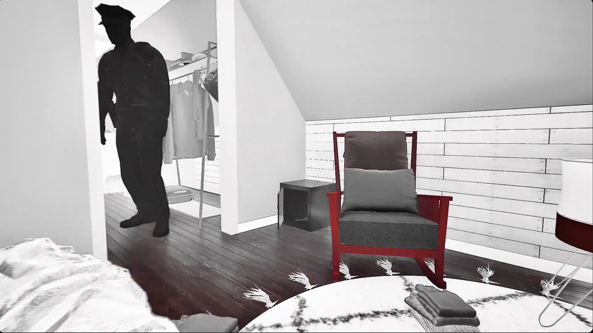
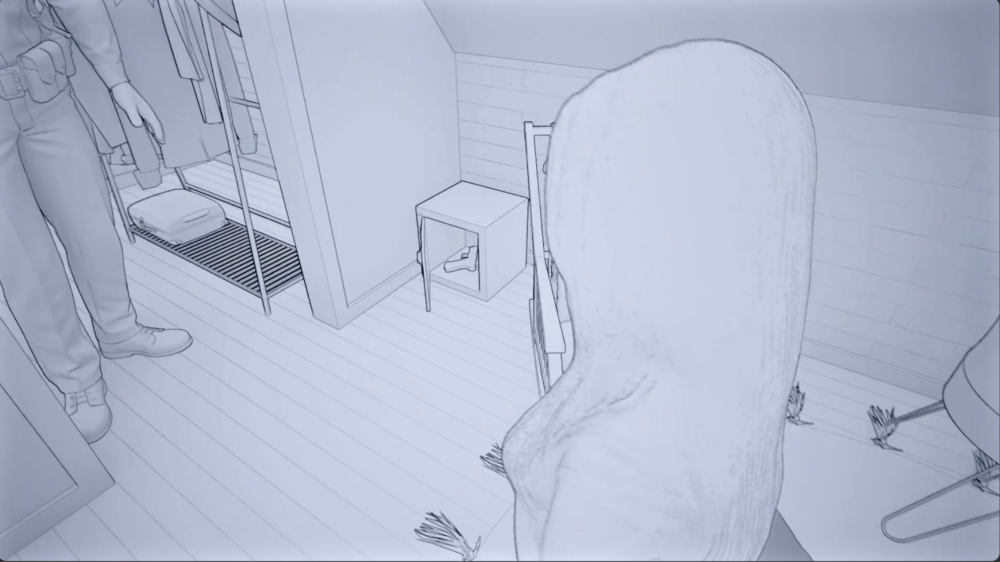

Points Noonan maintained consistently across direct and cross-examination — these are not in dispute.
Same facts, irreconcilable interpretations
| Point of Dispute | Noonan's Account | Kelsey's Account | Analytical Note |
|---|---|---|---|
| Gun direction | Leveled at his face, two-handed modified weaver (revised to one-handed) | Raised to her own temple — never pointed at Noonan | Irreconcilable. No third eyewitness inside the room. |
| Trigger intent | To shoot him | To shoot herself | Irreconcilable. Turns entirely on direction of gun. |
| Tap-rack sequence | She backpedaled, performed two deliberate tap-rack attempts over ~4 seconds, then raised her arm toward him — he fired | There was no tap-rack. Noonan fired immediately after the misfire click as she said a curse word — no interval, no movement toward him | Direct contradiction — not a gap in her account. Two incompatible timelines. Central question for the judge. |
| Basement gun claim | Accepted at face value; found no gun | Deliberate lie to clear room for suicide | Both agree on facts. Dispute is motive only. |
| Requests to take things downstairs | Suspicious — possibly pre-attack staging | Attempts to isolate herself to complete suicide | Same facts, opposite interpretation. No resolution available. |
| Gun under her leg | "The way she fell" — couldn't explain physics | Temple placement + backward fall = lateral gun position. Consistent with physics. | Her physics argument is stronger and went unanswered. |
| "Kelsey, no" commands | Telling her to stop pointing at him | Defense: language used to someone with gun to their head, not muzzle in your face | Noonan's own words in the moment support her account. |
Transcripts are rendered below. Use Ctrl+F / Cmd+F within each pane to search by timestamp (e.g. "21:14"). Click ↗ links above to open raw files.






